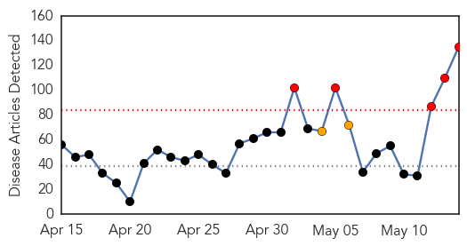
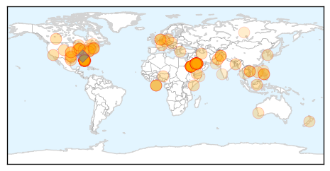
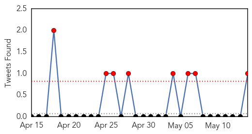
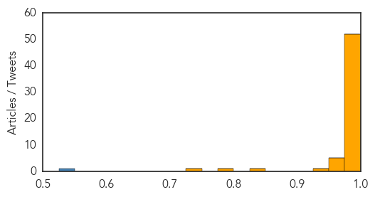

Unknown
30-Day Web Trend
5 alerts, 2 warnings

30-Day Twitter Trend
2 alerts, 3 warnings

Article Locations
Article Confidences

Top Articles:
- 1.000
- WHO says deadly MERS virus does not constitute global emergency
- 1.000
- Deadly MERS virus serious, but not an emergency: WHO
- 1.000
- KATU.com - Portland News, Sports, Traffic Weather and Breaking News - Portland, Oregon
- 1.000
- MERS warning signs going up in U.S. airports
- 1.000
- MERS warning signs going up in U.S. airports
- 1.000
- MERS Not Yet a Public Emergency, World Health Organization Says
- 1.000
- MERS virus isn't an emergency—yet (Update)
- 1.000
- UPDATE 2-WHO says deadly MERS virus very serious, but not an emergency
- 1.000
- MERS Not Yet a Public Health Emergency
- 0.999
- WHO panel says MERS not yet a public emergency
- 0.999
- UN warns countries to bolster fight against MERS virus
- 0.999
- Two sick U.S. hospital workers test negative for MERS virus
- 0.999
- Two sick U.S. hospital workers test negative for MERS virus
- 0.999
- UPDATE 2-Two sick U.S. hospital workers test negative for MERS virus
- 0.999
- World Health Organization: MERS isn't an emergency
- 0.999
- CDC Wants to Track Down Around 100 in MERS Case
- 0.999
- 2 Orlando hospital workers test negative for MERS in Florida
- 0.999
- MERS Is Not A Global Public Health Emergency, WHO Says
- 0.999
- New MERS virus not a global emergency, says WHO
- 0.999
- Patient with deadly MERS virus waited hours in Florida ER — RT USA
- 0.999
- 2 Orlando hospital workers test negative for MERS in Florida
- 0.999
- Global health officials say no need to panic as MERS virus spreads overseas
- 0.998
- UN warns countries to bolster fight against MERS virus
- 0.998
- Hospital Workers Exposed to MERS Virus Awaiting Test Results
- 0.998
- Local hospitals on high alert for deadly MERS virus
- 0.997
- Health officials: MERS contained in Orlando
- 0.997
- Health Officials Concerned Over MERS Virus
- 0.996
- MERS update: 2 workers test negative
- 0.996
- MERS Spreading in US? 2 Health Workers Exposed to Virus Show Early Symptoms
- 0.996
- Signs at Atlanta airport warn of MERS
- 0.996
- MERS Warning Signs Go Up At Miami International Airport « CBS Miami
- 0.995
- Hospital officials: Two 'symptomatic' health care workers test...
- 0.995
- U.S. Reports Third Case of Potential MERS Virus — Naharnet
- 0.995
- Second MERS Case Identified in US
- 0.995
- What is MERS?
- 0.995
- ‘MERS’ Warnings Posted At DIA « CBS Denver
- 0.995
- Second US MERS Case Found in Florida
- 0.994
- Two U.S. Hospital Workers Test Negative for MERS
- 0.994
- Doctor may have brought MERS into Canada: reports
- 0.994
- Doctor may have brought MERS into Canada: reports
- 0.994
- flu patients asked if they visited Saudi Arabia
- 0.994
- 2 US hospital workers test negative for MERS
- 0.994
- 2 US hospital workers test negative for MERS
- 0.992
- US confirms second case of Mers
- 0.992
- UN warns countries to bolster MERS fight
- 0.992
- Saudi announces 5 new MERS deaths
- 0.992
- Will MERS Become a Pandemic?
- 0.991
- US reports third case of potential Mers virus
- 0.990
- 20 health care workers in Florida told to stay home after second case of MERS confirmed in U.S.
- 0.990
- MERS-exposed hospital workers in Munster, Indiana, return to work
Showing top 50 articles...
Top Tweets:
- 0.926
- RT: If patient with confirmed flu virus infection recently traveled from Saudi Arabia, test for MERS. Co-infection can occur.
- 0.672
- RT: CDC & health officials from & @HealthyFla together investigate first 2 MERS cases imported to U.S. http:…
- 0.605
- on the Florida MERS case and the 2 HWCs who developed flu-like symptoms after contact with the case. http://t.co/G86pj6cekp
- 0.537
- Breaking: Saudi MoH announces 16 new MERS cases and 5 deaths. Total cases now exceeds 500 with 157 deaths. http://t.co/j1HZZd731i
- 0.527
- Hows MERS different from flu? http://t.co/vVsqjwDkSO
MERS
30-Day Web Trend
29 alerts, 1 warnings

30-Day Twitter Trend
2 alerts, 0 warnings

Article Locations

Article Confidences
Top Articles:
- 1.000
- MERS advisories by CDC to be posted at 22 airports around the country
- 1.000
- World Health Organization
- 1.000
- 9 things you need to know about MERS
- 1.000
- World Health Organization
- 1.000
- MERS virus raises concern
- 1.000
- Nine things you need to know about MERS
- 1.000
- Untitled Article
- 1.000
- MERS threat 'significantly increased' but WHO says it's not yet a global health emergency
- 1.000
- MERS virus patient may have infected hundreds after 4 HOURS in emergency waiting room
- 1.000
- MERS outbreak becomes more urgent, WHO says
- 1.000
- Florida health workers have symptoms after MERS patient contact
- 1.000
- MERS 'urgency' not a public health emergency, WHO says
- 1.000
- MERS 'urgency' not a public health emergency, WHO says
- 1.000
- Officials 2nd U S case of MERS reported in Orlando
- 0.999
- WHO holds emergency meeting on deadly MERS virus
- 0.999
- MERS: five things to know
- 0.999
- WHO holds emergency meeting on deadly MERS virus
- 0.999
- 2 Orlando health workers show symptoms
- 0.999
- WHO holds emergency meeting on deadly Saudi MERS virus
- 0.999
- 2nd US case of MERS reported
- 0.999
- MERS an international emergency? WHO deciding
- 0.999
- WHO calls for stepping up alert against Mers
- 0.999
- Doctor who travelled to Canada tests negative for MERS
- 0.999
- Doctor who travelled to Canada tests negative for MERS
- 0.999
- Doctor who travelled to Canada tests negative for MERS
- 0.999
- Two Florida Hospital Workers Likely Exposed to MERS
- 0.999
- Mers virus: Two negative tests in Florida
- 0.999
- Expert panel convenes to advise WHO on whether MERS is a public health emergency
- 0.999
- LAX Passengers Warned Of Emerging SARS-Like Virus « CBS Los Angeles
- 0.999
- CDC Posts MERS Warning at U.S. Airports After More Cases Suspected
- 0.999
- Two sick U.S. hospital workers test negative for MERS virus
- 0.999
- Fears of MERS Epidemic Exaggerated – ECDC
- 0.998
- MERS not yet a global health emergency
- 0.998
- Two more people in Florida show symptoms of deadly MERS virus
- 0.998
- Florida Healthcare Workers Being Tested For Deadly MERS Infection
- 0.998
- MERS Watch: WHO Calls for Calm
- 0.998
- Florida Hospital Says Workers Test Negative for Middle East Virus
- 0.997
- Two healthcare workers in Florida may have MERS after treating patient
- 0.997
- No restrictions on visiting schools, hospitals
- 0.996
- Filipinos criticize govt for MERS ‘clearance’ condition - ‘No discrimination against OFWs’ - Kuwait Times
- 0.995
- As the number of cases mounts, MERS is still a mystery virus
- 0.995
- Gulf Daily News World News WHO alert over Mers virus
- 0.994
- How the Deadly MERS Virus Has Spread Around the World (Infographic)
- 0.993
- Middle East Online
- 0.990
- SFO to Travelers: Watch Out For Middle East Respiratory Syndrome
- 0.989
- MERS: 5 things to know
- 0.987
- 2-year-old is latest MERS victim
- 0.983
- Middle East Respiratory Syndrome not global public health emergency
- 0.983
- Local hospitals cautious of MERS virus
- 0.982
- Private companies in UAE joining in battle to fight Mers coronavirus
Showing top 50 articles...
Top Tweets:
- 0.538
- RT: UPDATE: The two team members from Dr. P Phillips Hospital who were symptomatic have tested NEGATIVE for MERS-CoV. Orla…